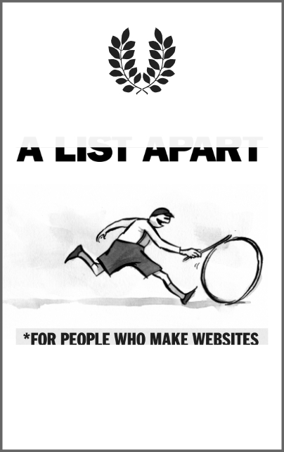
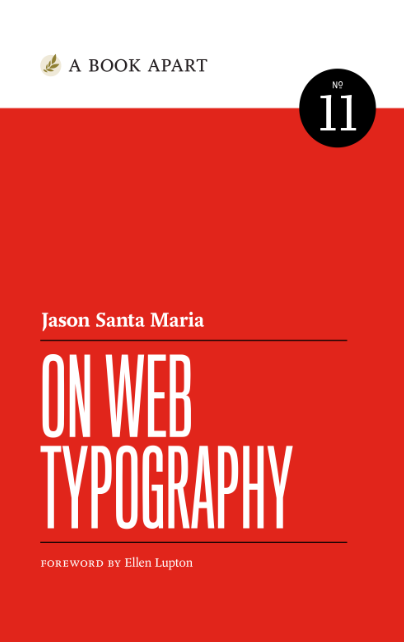
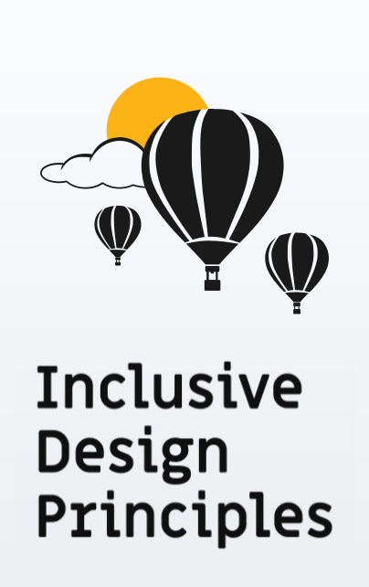
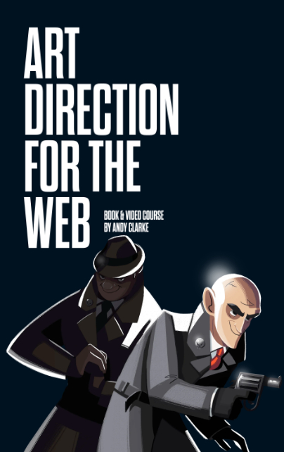
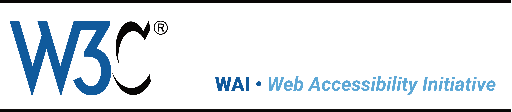

References & reading
To grow your skills, we recommend that you make reading part of your studies. There are some excellent publications online to help you along. Then there are references you need to be aware of and use for your project work. This page includes links we recommend ~ and please do share your findings. We'd be more than happy to update this page with more links ツ
-
Design gains value as it moves from hand to hand; context to context; need to need. If all of this movement harmonizes, the work gains a life of its own, and turns into a shared experience that enhances life and inches the world closer to its full potential. quoted from book introduction
-
 A List ApartA List Apart (ISSN: 1534-0295) explores the design, development, and meaning of web content, with a special focus on web standards and best practices. quoted from website
-

This book is about making you a better typographer. [...] Typography matters because it helps conserve the most valuable resource you have as a writer—reader attention. quoted from website
-
 On Web TypographyTypography is your design’s voice and the most powerful tool you have to communicate with your readers. Learn how to wield type with care and wit: how to evaluate typefaces, consider technical constraints, create flexible typographic systems, and put together your own collection of favorite faces. quoted from website
-
 Inclusive Design PrinciplesThese Inclusive Design Principles are about putting people first. It's about designing for the needs of people with permanent, temporary, situational, or changing disabilities — all of us really. quoted from website
-
 Art direction for the web Andy ClarkeWith Art Direction for the Web, Andy provides a framework for harnessing the web’s potential. With historical context and real-life examples, Andy inspires each of us to be more purposeful about the choices we make. Trent Walton, co-founder of Paravel Inc.
-
developer.mozilla.org
Resources for developers, by developers
formerly MDN, MDN Web Docs launched by Mozilla around 2005
-
Web Accessibility Initiative
Making the Web Accessible. Strategies, standards, and supporting resources to help you make the Web more accessible to people with disabilities.
 -
codrops: CSS Reference
An extensive CSS reference with all the important properties and info to learn CSS from the basics.

-
PHP
Home to PHP documentation, references and source code.
-
MySQL
Developer Zone with official documentation, blogs and forums.
-
&what;
AmpWhat is the place to explore the characters and icons ... Discover Unicode and Character Entities.


- equality
- data
-
- gov.uk: data protection, UK
- gov.uk: Data Protection Act 2018
- ico.org.uk: Your data matters
- gdpr-info.eu: General Data Protection Regulation GDPR
- copyright
-
- gov.uk: How copyright protects your work
- gov.uk: Copyright Act 2021